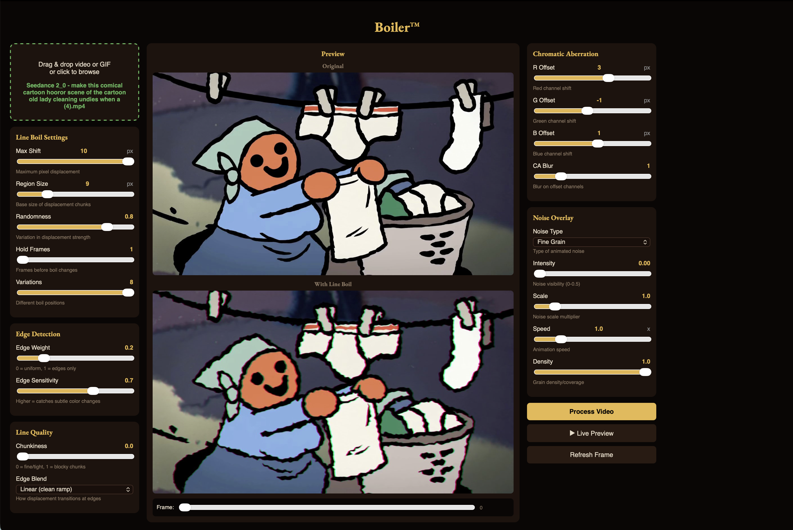

Give any video the wobbly, hand-drawn life of traditional animation. Free Mac app. No subscriptions, no accounts.

Modern digital animation looks clean and dead. ZohoBoil puts the wobble back.
Edge-aware random displacement that mimics the natural wobble of hand-drawn frames. Every edge breathes a little.
Split the red, green, and blue channels independently for that VHS / old-film color-fringe look. Add CA Blur for softness.
Fine grain, coarse grain, TV static, Perlin noise, scanlines — all animated frame-by-frame.
Concentrate the wobble on color edges only, or let it ripple across the whole frame. Sensitivity catches subtle color transitions.
Play an animated preview while you tweak. No "render and pray" cycle — see the change instantly.
Original audio passes through cleanly. Export as H.264 MP4, ready for the web.
Grab ZohoBoil.app.zip from the Releases page, unzip, drag into Applications. First launch: right-click → Open. macOS will warn about an unidentified developer — that's expected. You only need to do it once.
Drag any .mp4, .mov, or .gif onto the dashed box. The preview shows the original on top, the boiled version below.
Move the Max Shift slider to control how many pixels each edge can wander. Hold Frames controls how long each "drawing" sits before the next boil. Start low — a value of 3 already looks alive.
Add Chromatic Aberration for color-fringe character. Pick a Noise Overlay for grain or static. Use Edge Weight to focus the boil on edges only.
Click ▶ Live Preview to see the result animated while you tweak. When you like it, hit Process Video, wait for the bar, then Download. The Save dialog opens at your Downloads folder.
Short writing about the app, animation, and the things that broke along the way.
Why the world needs another video filter app. What's in this release, what's not, and what's coming next.
A short history of the wobble — from Disney's bouncing-ball tests to modern flash animation, and why every digital filter ignores it.
LAB color-space edge detection, displacement maps, OpenCV remap. A walk through the actual code, for the curious.